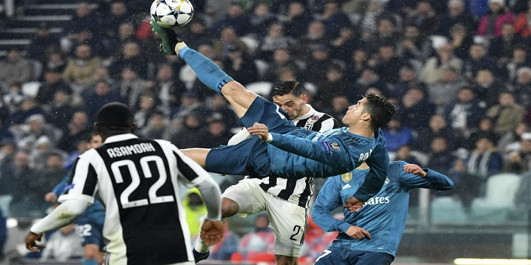
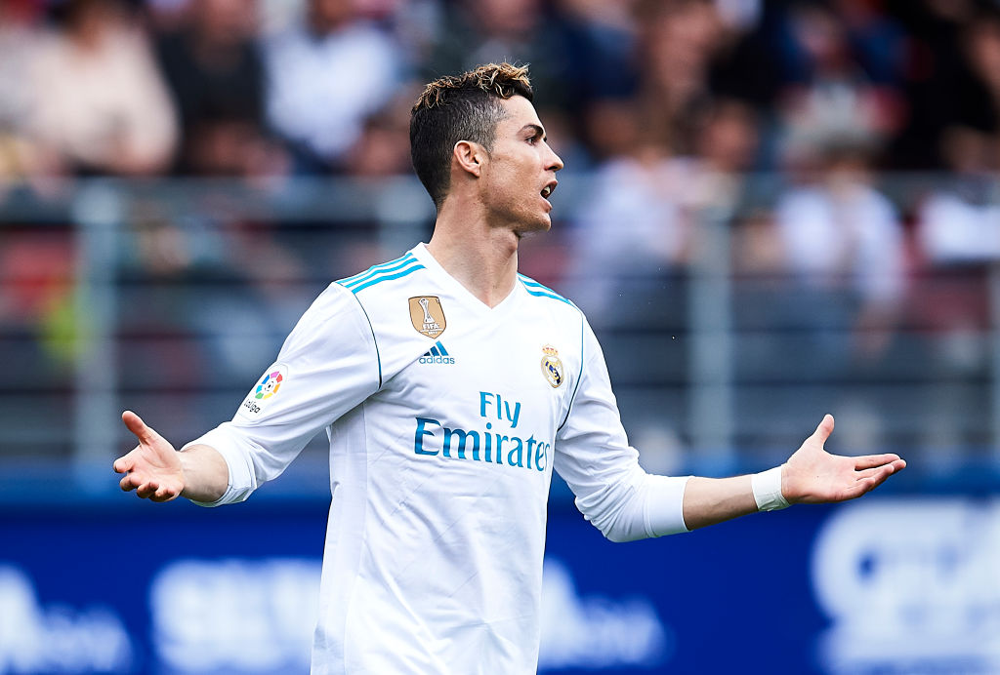

.jpg)
كريستيانو رونالدو
2009 · 2018
كريستيانو رونالدو
2009 · 2018
المركز: مهاجم
عدد المباريات: 438 مباراة رسمية
الأهداف: 451
لاعب دولي مع البرتغال
كريستيانو رونالدو جزء من أسطورة ريال مدريد وسيبقى دائماً أحد أكبر رموزه التاريخية. تم تقديمه رسمياً في السانتياغو برنابيو في 6 يوليو 2009، برفقة أوزيبيو وألفريدو دي ستيفانو، ولم يتوقف منذ تلك اللحظة عن تسجيل الأهداف: 451 هدفاً في 438 مباراة رسمية مع ريال مدريد (بأكثر من هدفٍ واحد في المباراة الواحدة). إلى جانب ذلك سجل الأهداف في جميع المسابقات: 312 هدفاً في الليغا، 105 في دوري أبطال أوروبا، 22 في كأس الملك، 6 في كأس العالم للأندية، 4 في كأس السوبر الإسباني وهدفين في كأس السوبر الأوروبي، متفوقاً في هذا التصنيف على جميع اللاعبين في تاريخ النادي.
كذلك يحظى كريستيانو بسجل ألقاب مدهش: دوري أبطال أوروبا (4 مرات)، كأس العالم للأندية (3)، كأس السوبر الأوروبي (3)، الدوري الإسباني (2)، كأس الملك (2) وكأس السوبر الإسباني (2). يُضاف إلى ذلك فوزه بجائزة الكرة الذهبية (4 مرات)، جائزة الحذاء الذهبي (3)، جائزة الأفضل (2)، جائزة أفضل لاعب في أوروبا (3) وجائزة البيتشيتشي (3).
على مدار مواسمه التسع بقميص ريال مدريد، حقق كريستيانو أرقاماً قياسية مذهلة: أفضل هداف في تاريخ النادي، أفضل هداف في تاريخ دوري أبطال أوروبا (سجل 105 هدفاً في البطولة القارية مع ريال مدريد)؛ أفضل هداف مدريديستا في الليغا (312)؛ أكبر عدد من المباريات بثلاثة أهداف أو أكثر في تاريخ الليغا (34) وأكبر عدد من الأهداف في موسمٍ واحد مع ريال مدريد (61 هدفاً).
إلى جانب ذلك، يمتلك المهاجم الأبيض الرقم القياسي لعدد الأهداف في موسمٍ واحد في دوري أبطال أوروبا (17)، كما حاز على جائزة البيتشيتشي لأفضل هدّاف في ستة مواسم في دوري أبطال أوروبا. وصفه رئيس النادي فلورنتينو بيريز بأنه "وريث ألفريدو دي ستيفانو". وعلى غرار دي ستيفانو، ترك كريستيانو بصمة خالدة في تاريخ أفضل نادٍ في العالم.
لقب دوري أبطال أوروبا (4 مرات)
كأس العالم للأندية (3)
كأس السوبر الأوروبي (3)
الدوري الإسباني (2)
كأس الملك (2)
كأس السوبر الإسباني (2)
وبطولة أمم أوروبا لكرة القدم مع المنتخب البرتغالي (1)